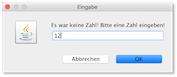

Übungen¶
Übung 1 (Git)¶
Übung 1
- Erstellen Sie sich einen GitHub-Account (oder wählen Sie einen anderen Git-Diensteanbieter)
- Erstellen Sie sich dort ein zentrales Repository
- Richten Sie Ihren
workspace, in dem Sie alle Ihre Entwicklungen in diesem Semester durchführen wollen (Übungen, Aufgaben, ...) als lokales Git-Repository ein - Synchroniseren Sie Ihr lokales und Ihr zentrales Git-Repository
Übung 2 (enum und zweidimensionale Arrays)¶
Übung 2
-
Gegeben ist die folgende Klasse
TicTacToe:1 2 3 4 5 6 7 8 9 10 11 12 13 14 15 16 17 18 19 20 21
package uebungen.uebung2; public class TicTacToe { enum State {EMPTY, RED, BLACK}; State[][] field; public TicTacToe() { field = new State[3][3]; for(int i=0; i<field.length; i++) for(int j=0; j<field[i].length; j++) field[i][j]=State.EMPTY; } public void makeMove(int i, int j, State player) { if(field[i][j]==State.EMPTY && player!=State.EMPTY) field[i][j]=player; } } -
Fügen Sie alle notwendigen Klammern
{ }ein, so dass die Anweisungsblöcke korrekt geklammert sind. -
Erweitern Sie die Klasse
TicTacToeum eineprint()-Methode, die das Spielfeld auf die Konsole ausgibt (Setzen Sie z.B. für den PlayerREDeinxund für den PlayerBlackeinound fürEMPTYein Leerzeichen oder ein-). Die Ausgabe nach jeweils 2 Zügen vonREDundBLACKkönnte dann z.B. so aussehen:- o o - x - - - x -
Erweitern Sie die Klasse
TicTacToeum einegewonnen()-Methode (true, wenn ein Spieler drei Felder horizontal, diagonal oder vertikal belegt hat; ansonstenfalse). - Erweitern Sie die Klasse
TicTacToeum eineunentschieden()-Methode (true, wenn alle Felder besetzt sind, aber kein Spieler gewonnen hat; ansonstenfalse). - Erstellen Sie eine Test-Klasse mit
main()-Methode. Erstellen sie darin ein Objekt der KlasseTicTacToe. Führen Sie Züge aus (makeMove()) und prüfen Sie, ob gewonnen wurde oder unentschieden ist (mit entsprechenden Ausgaben). -
Für 6. müssen Sie in der Testklasse Ihr
enum Stateimportieren. Warum ist das so? Was könnten Sie machen, damit das nicht notwendig ist? -
Zusatz: Sie können die Klasse
TicTacToebeliebig erweitern, z.B.:- um Ausgaben, wenn gewonnen bzw. es unentschieden ist,
- um Fehler in den Indizes
iundjbei dermakeMove()-Methode abzufangen, - eine Methode
spielen()implementieren, die zufällig für die Spieler die Steine setzt usw.
Viel Spaß!
Übung 3 (Exceptions)¶
Übung 3
-
Schreiben Sie ein Programm zur Eingabe von zwei Zahlen mithilfe der Klasse
JOptionPaneaus dem und deren Division! Fangen Sie folgende Ausnahmen ab:- Falls die Eingabe keiner Zahl entspricht.
- Falls die zweite Zahl eine 0 ist.
-
Scenario:
- Fenster zur Eingabe von Zahl 1 öffnet sich:

- falsche Eingabe - keine Zahl:

- Fenster öffnet sich erneut (andere Nachricht!):
 - Fenster zur Eingabe von Zahl 2 öffnet sich:

- die Division Zahl1/Zahl2 schlägt fehl (
ArithmeticException), deshalb (andere Nachricht!):

- Ergebnis

- Fenster zur Eingabe von Zahl 1 öffnet sich:
-
Lagern Sie eine solche Eingabemöglichkeit in eine wiederverwendbare Methode aus, z.B.
public int inputInt(int min, int max), welche die eingegebene Zahl zurückgibt, wobei die eingegebene Zahl im Bereich[min, max]liegen muss. -
Lesen Sie eine Anzahl von Sekunden ein und schreiben Sie eine Umrechnung, so dass folgende Ausgabe entsteht (die Eingabe ist hier über die Konsole gezeigt) :
Gib eine Anzahl von Sekunden ein: 3456789 3456789 Sekunden sind 40 Tage, 13 Minuten, 9 Sekunden.Gib eine Anzahl von Sekunden ein: 2345678 2345678 Sekunden sind 27 Tage, 3 Stunden, 34 Minuten, 38 Sekunden.Gib eine Anzahl von Sekunden ein: 123456 123456 Sekunden sind 1 Tag, 10 Stunden, 17 Minuten, 36 Sekunden.Gib eine Anzahl von Sekunden ein: 12345 12345 Sekunden sind 3 Stunden, 25 Minuten, 45 Sekunden. -
Lesen Sie eine Zahl ein und geben Sie die Quersumme der Zahl aus.
Viel Spaß!